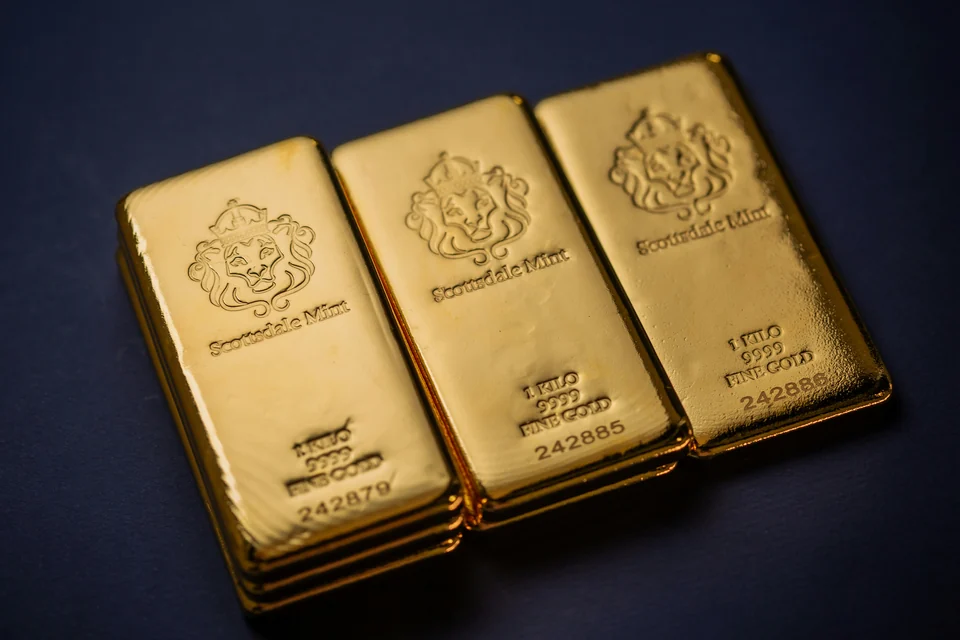

Goldankauf in Karlsbad
Was ist Ihr Gold wert?
Ich bin Dietmar Vogelmann. Bringen Sie Ihren Schmuck, Ihre Münzen oder Barren mit. Wir wiegen und prüfen jedes Stück gemeinsam. So wissen Sie, wie mein Angebot zustande kommt.


Wege zum Ankauf
Wie möchten Sie Ihr Gold verkaufen?

Schmuck, Münzen und Besteck
Auch ein einzelner Ohrring lässt sich prüfen.
Eine gerissene Kette, Zahngold oder abgenutztes Tafelsilber können noch Edelmetall enthalten. Zum Ankauf gehören außerdem Goldbarren, Münzen und Stücke aus Platin oder Palladium.
Bei Schmuck mit einem besonderen Stein lohnt sich ein zweiter Blick. Ob eine eigene Untersuchung sinnvoll ist, besprechen wir gemeinsam.
Zur EdelsteinprüfungIhr Ansprechpartner
Dietmar Vogelmann
Gerade bei einem Nachlass liegen oft Dinge nebeneinander, die für Ihre Familie ganz Unterschiedliches bedeuten. Wir können erst einmal sortieren. Sie entscheiden für jedes Stück, ob Sie es behalten oder verkaufen möchten.

Woran erkennt man die Qualität eines Steins?
Vergleichen Sie Diamantfarben und Reinheitsgrade. Echte Aufnahmen zeigen, was Rubin, Saphir und Smaragd unterscheidet.